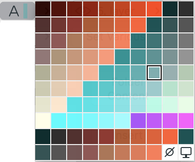
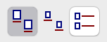
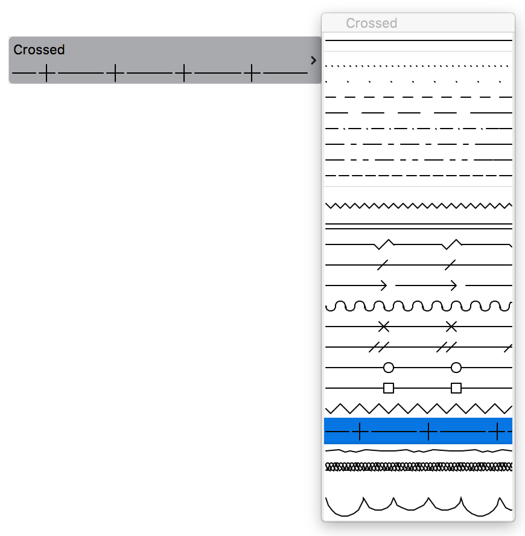

What's the required format of User Controls in the .grc file?
The required format of UserControl items in the .grc files always caused a headache. In this document, we'll explain the meaning of the different numbers behind the UserControl definition. Let's see them type by type. The examples were mostly taken from DG_Test, which is part of the development kit.
UserControl 257
This control is a collection of special controls; it encapsulates controls which are very different in appearance, but not in functionality. Basically this control consists of a button, which pops up a palette when clicked. The content of the button is updated as the user moves the mouse above the palette.
Examples: material, pen, layer palette pop-up.

The generic format of this control is:
UserControl 87 82 33 19 257 0x0001 0x1100 0 /* Line Pen Setting */
Let's see the 'numbers' one by one:
| Item | Description | Example |
|---|---|---|
UserControl |
the type of the dialog item | |
87 82 33 19 |
the item's rectangle (top, left, width, height) | |
257 |
the type of the user control | |
0x0001 |
defines the subtype of the user control (see the constants starting with T257_ in UCDefs.h) |
0x0001 is T257_PEN, so this is a pen control |
0x1100 |
the upper byte modifies the appearance of the user control (see the constants starting with CS257_ in UCDefs.h)Note: not all the flags are valid for all types of controls the lower byte is always 00 |
0x11 is CS257_HEADER | CS257_SMALLFONT, so the pop-up palette will have a header, and the menu items and the header will use the small application font. |
0 |
used in textual pop-ups only T257_TEXT and T257_MENU; it contains the id of the 'STR#' resource containing the menu itemsNote: due to a bug in the dialog manager, this cannot be used at the moment |
UserControl 258
This control is an icon-based pop-up control. The icons coming from the specified resource appear on the pop-up palette.
Example: suspend groups selector on the control box.

The generic format of this control is:
UserControl 12 8 66 22 258 2 14 0 1 32520
Let's see the 'numbers' one by one:
| Item | Description |
|---|---|
UserControl |
the type of the dialog item |
12 8 66 22 |
the item's rectangle (top, left, width, height) |
258 |
the type of the user control |
2 |
specifies the number of rows you would like to see the icons |
14 |
tells the total number of icons |
0 |
always |
1 |
modifies the appearance of the user control (combination of the constants starting with CS258_ in UCDefs.h)1 is CS258_HEADER ⇒ the pop-up palette will have a header2 is CS258_MOUSEPOSOPEN ⇒ the pop-up palette will appear relative to the mouse position, (as opposed to the control's rectangle)4 is CS258_SIMPLEFRAME ⇒ the pop-up palette will have a simpler frame (Windows only)
|
32510 |
id of the icon resource; contains all the icons. This icon is cut into pieces to create the individual icons. This also servers as the resource ID of the title strings, if the popup palette has a header (CS258_HEADER). |
UserControl 259
This control is an icon-based control. The icons coming from the specified resource are layed out flat.
Example: type selector in the library browser.

The generic format of this control is:
UserControl 12 8 30 28 259 1 3 0 0 32510
Let's see the 'numbers' one by one:
| Item | Description |
|---|---|
UserControl |
the type of the dialog item |
12 8 30 28 |
the item's rectangle (top, left, width, height) |
259 |
the type of the user control |
1 |
specifies the number of rows you would like to see the icons |
3 |
tells the total number of icons |
0 |
always |
0 |
always |
32510 |
id of the icon resource; contains all the icons |
UserControl 261
This control is the line type pop-up control. The content of the button is updated as the user moves the mouse above the palette. The specialty of this control is that it calls back to the server application to draw the line type into the control.
Example: any line type pop-up.

The generic format of this control is:
UserControl 42 0 260 40 261 0x0100 /* Line type for Line Tool */
Let's see the 'numbers' one by one:
| Item | Description | Example |
|---|---|---|
UserControl |
the type of the dialog item | |
42 0 260 40 |
the item's rectangle (top, left, width, height) | |
261 |
the type of the user control | |
0x0100 |
the upper byte modifies the appearance of the user control (see the constants starting with CS261_ in UCDefs.h)the lower byte is always 00 |
0x01 is CS261_HEADER, so the pop-up palette will have a header. |